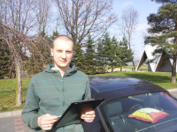

Krzysztof Nyrek - Strona domowa
Kim jestem?
Pierwszy kontakt z programowaniem miałem jakieś 20 lat temu. Tata kupił Atari 800XL. Początkowo komputer służył tylk odo uruchamiania gier, ale z czasem zacząłem się zastanawiać, jak te gry działają? Jak to się dzieje, że gra działa tak jak działa. Miałem do dyspozycji kilka egzemplarzy Bajtka i duży podręcznik do obsługi Arati, gdzie znajdował się opis sposobu pisania programów w Basicu. Więcej o Basicu możesz znaleźć tutaj: Atari_BASIC. Wtedy nie ogarnąłem nic więcej poza prostymi funkcjami if, ale udało mi się dzięki temu stworzyć pierwszą prostą grę logiczną. Szkoda, że przepadła razem z Atari.
Później miałem możliwość kodowania przez krótki czas w Delphi. Niestety czasy to były takie, że z internetem można się było łączyć tylko przez modem i kosztowało to bajeczne sumy, więc moja zabawa na tamten czas z programowaniem się zakończyła. Nie miałem też możliwości podjęcia nauki w technikum informatycznym, bo najbliższe dostępne było daleko od rodzinnego miasta. Takie to były offlinowe czasy 😉
Potem moja ścieżka zawodowa zaprowadziła mnie w kierunku chemii. Tam jak łatwo się domyślić, programowania było jak na lekarstwo, choć Matlaba ogarnąłem na tyle, żeby spokojnie prowadzić w nim niezbędne do zaliczenia zajęć obliczenia. W tak zwanym międzyczasie kodowałem strony www. Pierwszą stronę zbudowałem na szkielecie z tabeli. Koszmarnie wtedy produkowało się strony, które działały na jednym komputerze, a na innym wszystko się rozjeżdżało i trzeba było sporo się nakombinować, żeby strona wyglądała ładnie na większości komputerów.
Dzisiaj mając 35 lat postanowiłem wrócić do świata IT. Dlaczego? Tak zwanym “trigerem” był kurs VBA for Microsoft Excel. Ukończyłem kurs i wskoczyłem w wir radosnego programowania. Godziny uciekały jak szalone, a ja poczułem niesamowitą radość. Uświadomiłem sobie również, że cheć ukończenia technikum infomratycznego nadal we mnie jest żywa. Zapisałem się wieć, do technikum infomratycznego. Na zajęciach czuję się jak ryba w wodzie. No może poza BHP, bo ile można słuchać o byciu rozsądnym w pracy. Przedsiębiorczość też do najciekawszych przedmiotów nie należy, ale tak może być, bomiałem okazję prowadzić i jednoosobową działalność gospodarczą i spółkę z o.o.
Głodny wiedzy zanużyłem się również w świat kursów online i ciągnę wiedzę jak szalony. Gdzie mnie to zaprowadzi? Nie wiem, ale chciałbym Ciebie zaprosić w tą podróż, dzieląc się moimi spostrzeżeniami na tej stronie.
Poza programowaniem lubię podróżować. Na tej stronie znajdzie się również sekcja poświęcona miejscom które odwiedziłem, zdjęciom jakie się udało zrobić i ciekawych rzeczach, które odkryłem.
Podstrony
Artykuły
Ucząc się programowanie zdobywam masę wiedzy. Część tej wiedzy szybko ucieka. Wiedząc, że najlepszym sposobem na naukę, jest przekazywanie wiedzy innym postanowiłem pisać dłuższe artykuły z określonych obszarów programowania. Z jednej strony pomaga mi to usystematyzować zdobytą wiedzę, a z drugiej strony może zaciekawię cię jakimś obszarem. Zapraszam do lektury.
Sprawdź dostępne artykuły
O czym piszę na blogu?
Mając 35 lat stwierziłem, że programowanie to moje hobby i rzuciłem się w wir nauki. Szybko okazało się, że wiele osób zastanawia się, jak długo trzeba się uczyć programowania i co można osiągnąć w tym segmencie rynku. Sam nie wiem, ale postanowiłem dzielić się swoimi doświadczeniami z tej drogi. Na blogu co tydzień publikuję podsumowanie mijającego tygodnia. Jeżeli masz ochotę, to zapraszam Cię do wspólnej przygody.
Sprawdź co nowego na blogu